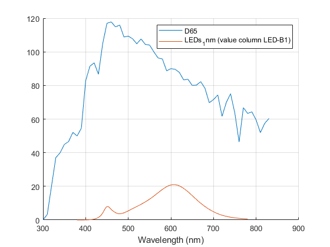

CIEData
Navigate to: Home | Alphabetic list | Grouped list | Source code: CIEData.m
The CIEData class provides official CIE data from https://cie.co.at/data-tables. Each dataset at this website is given as a .csv file with an array of numbers, and a .json file with metadata. This class provides all spectra in the official CIE dataset ready to use in this library.
Contents
Syntax
- Constructor: rv = CIEData()
Properties
- CIE_Database_: Read-only. Array of 35 structs with individual CIE datasets. Each struct has fields Values (the .csv file content, a 2D array of double, where the first column is almost always wavelength in nm), Metadata (the .json file content, a struct with much additional information), ShortName (a short name assigned by me, to be used for lookup), and ColumnHeaders (a dictionary with the column header name as key, and the column index as value). This dataset is read from CIE_Database.mat, which was constructed (Create_CIE_Database.m) from the 35 .csv and associated .json files downloaded from https://cie.co.at/data-tables. In Create_CIE_Database.m, the .csv content was succesfully verified against the md5 checksums, the sum of columns and the sample row data provided in the .json files. (Note: As of 2024-08-20, there is an error in the CIE sum of columns data for standard illuminant A; CIE has been notified to correct this).
Methods
- function rv = DataList(obj): An overview which items are in this collection Output Arguments: rv: A table with 35 rows and three columns: ShortName, a string copied from the ShortName field of the CIE_Database_ property; Description, a string copied from the descriptions.description field of the metadata struct; and ColumnHeaders, a string containing all column headers names. Use the output of this function to see which exact names can be used in the following functions.
| ShortName | Description | ColumnHeaders |
| L41 | Relative spectral power distribution of the CIE reference spectrum L41, wavelength range: 360 nm to 830 nm, wavelength increment: 1 nm, original source: CIE 251:2023 Table 1 | lam, L41 |
| A-opic_action | Alpha-opic action spectra describing the ability of optical radiation to stimulate each of the five photoreceptor types that can contribute, via the melanopsin-containing intrinsically-photosensitive retinal ganglion cells (ipRGCs), to retina-mediated non-visual effects of light in humans, wavelength range: 380 nm to 780 nm, wavelength increment: 1 nm, original source: CIE S026:2018, Table 2 | lam, s_sc, s_mc, s_lc, s_rh, s_mel |
| CIE1931_border | Loci in a chromaticity diagram of points that represent monochromatic stimuli, CIE 1931, 2-degree observer, wavelength range: 360 nm to 830 nm, wavelength increment: 1 nm, original source: CIE 018:2019, Table 6. | lam, x, y, z |
| CIE1964_border | Loci in a chromaticity diagram of points that represent monochromatic stimuli, CIE 1964, 10 degree observer, wavelength range: 360 nm to 830 nm, wavelength increment: 1 nm, original source: ISO/CIE 11664-1:2019, Table 2 | lam, x10, y10, z10 |
| ConeFundamental_10deg_Vlambda | CIE cone-fundamental-based spectral luminous efficiency function for 10° field size in terms of energy, wavelength range: 390 nm to 830 nm, wavelength increment: 1 nm. To convert from terms of energy to terms of quanta, multiply by 1/lambda and renormalize, original source: CIE 170-2:2015, Table 10.4 | lam, Vlambda_F10 |
| ConeFundamental_2deg_Vlambda | CIE cone-fundamental-based spectral luminous efficiency function for 2° field size in terms of energy, wavelength range: 390 nm to 830 nm, wavelength increment: 1 nm. To convert from terms of enerty to terms of quanta, multiply by 1/lambda and renormalize, original source: CIE 170-2:2015, Table 10.2 | lam, Vlambda_F2 |
| ConeFundamental_10deg_xyz | CIE cone-fundamental-based spectral tristimulus values for 10°field size, wavelength range: 390 nm to 830 nm, wavelength increment: 1 nm, original source: CIE 170-2:2015, Table 10.8 (x_F,10_bar, y_F,10_bar, z_F,10_bar) | lam, x10, y10, z10 |
| ConeFundamental_2deg_xyz | CIE cone-fundamental-based spectral tristimulus values for 2°field size, wavelength range: 390 nm to 830 nm, wavelength increment: 1 nm, original source: CIE 170-2:2015, Table 10.7a | lam, x, y, z |
| C | Relative spectral power distributions of CIE illuminant C, wavelength range: 380 nm to 780 nm, wavelength increment: 5 nm, original source: CIE 015:2018 table 5 | lam, C |
| D55 | Relative spectral power distributions of CIE illuminant D55, wavelength range: 380 nm to 780 nm, wavelength increment: 5 nm, original source: CIE 015:2018 table 5 | lam, D55 |
| D75 | Relative spectral power distributions of CIE illuminant D75, wavelength range: 380 nm to 780 nm, wavelength increment: 5 nm, original source: CIE 015:2018 table 5 | lam, D75 |
| Dxx | Components S_0(lambda), S_1(lambda), S_2(lambda) of the relative spectral distribution of daylight used in the calculation of relative spectral power distributions of CIE daylight illuminants of different correlated colour temperatures, wavelength range: 360 nm to 830 nm, wavelength increment: 1 nm, original source: CIE 015:2018 Table 6 | lam, S0, S1, S2 |
| FLs_5nm | Relative spectral power distributions of illuminants representing typical fluorescent lamps, wavelength range: 380 nm to 780 nm, wavelength increment: 5 nm, original source: CIE 015:2018 table 10.1, 10.2, 10.3 | lam, FL1, FL2, FL3, FL4, FL5, FL6, FL7, FL8, FL9, FL10, FL11, FL12, FL3.1, FL3.2, FL3.3, FL3.4, FL3.5, FL3.6, FL3.7, FL3.8, FL3.9, FL3.10, FL3.11, FL3.12, FL3.13, FL3.14, FL3.15 |
| FLs_1nm | Relative spectral power distributions of illuminants representing typical fluorescent lamps, wavelength range: 380 nm to 780 nm, wavelength increment: 1 nm, original source: CIE 015:2018 table 10.1, 10.2, 10.3 | lam, FL1, FL2, FL3, FL4, FL5, FL6, FL7, FL8, FL9, FL10, FL11, FL12, FL3.1, FL3.2, FL3.3, FL3.4, FL3.5, FL3.6, FL3.7, FL3.8, FL3.9, FL3.10, FL3.11, FL3.12, FL3.13, FL3.14, FL3.15 |
| HPs | Relative spectral power distributions of high pressure discharge lamp illuminants, wavelength range: 380 nm to 780 nm, wavelength increment: 5 nm, original source: CIE 015:2018 table 11 | lam, HP1, HP2, HP3, HP4, HP5 |
| ID50 | Relative spectral power distribution of the daylight indoor illuminant ID50, wavelength range: 380 nm to 780 nm, wavelength increment: 5 nm, original source: CIE 184:2009 Table 2 | lam, ID50 |
| ID65 | Relative spectral power distribution of the daylight indoor illuminant ID65, wavelength range: 380 nm to 780 nm, wavelength increment: 5 nm, original source: CIE 184:2009 table 2 | lam, ID65 |
| LEDs_5nm | Relative spectral power distributions of illuminants representing typical LED lamps, wavelength range: 380 nm to 780 nm, wavelength increment: 5 nm, original source: CIE 015:2018 table 12.1/12.2 | lam, LED-B1, LED-B2, LED-B3, LED-B4, LED-B5, LED-BH1, LED-RGB1, LED-V1, LED-V2 |
| LEDs_1nm | Relative spectral power distributions of illuminants representing typical LED lamps, wavelength range: 380 nm to 780 nm, wavelength increment: 1 nm, original source: CIE 015:2018 table 12.1/12.2 (excel sheet associated with the publication) | lam, LED-B1, LED-B2, LED-B3, LED-B4, LED-B5, LED-BH1, LED-RGB1, LED-V1, LED-V2 |
| ConeFundamentals_10deg | CIE 2006 LMS cone fundamentals for 10° field size in terms of energy, wavelength range: 390 nm to 830 nm, wavelength increment: 5 nm, original source: CIE 170-1:2006 table 6.2 | lam, l10, m10, s10 |
| ConeFundamentals_2deg | CIE 2006 LMS cone fundamentals for 2° field size in terms of energy, wavelength range: 390 nm to 830 nm, wavelength increment: 5 nm, original source: CIE 170-1:2006 table 6.7 | lam, l, m, s |
| Max_SLE_mesopic | Values of maximum luminous efficacy for mesopic vision, K_m,mes;m at varied adaptation coefficient values m (for other m values use Eq. (8) of CIE 018:2019), original source: CIE 018:2019, Table 4 | m, K_m |
| Vlambda_10deg | Values of spectral luminous efficiency for 10° photopic vision, V10(lambda), lambda in standard air, original source: CIE 018:2019, Table 5 | lam, Vlambda_10 |
| Vlambda_mesopic_08 | Values of spectral luminous efficiency for mesopic vision, at adaptation coefficient m = 0.8, (i.e. Vmes;0,8(lambda)) as an example, (for other m values use Eq. (2) of CIE 018:2019), wavelength range: 360 nm to 830 nm, wavelength increment: 1 nm, original source: CIE 018:2019, Table 3. | lam, Vlambda_mesopic_08 |
| Vlambda | Values of spectral luminous efficiency for photopic vision, V(lambda), lambda in standard air, wavelength range: 360 nm to 830 nm, wavelength increment: 1 nm, original source: CIE 018:2019, Table 1 | lam, Vlambda |
| Vprime_lambda | Values of spectral luminous efficiency for scotopic vision, V_prime(lambda), lambda in standard air, wavelength range: 360 nm to 830 nm, wavelength increment: 1 nm, original source: CIE 018:2019, Table 2 | lam, Vprime_lambda |
| MacLeod_Boynton_lms | CIE spectral MacLeod-Boynton chromaticity coordinates for 2° field size, wavelength range: 390 nm to 830 nm, wavelength increment: 5 nm, original source: CIE 170-2:2015, Table 10.5 | lam, l_MB, m_MB, s_MB |
| CIE224_Refl_5nm | Spectral radiance factors of 99 test samples for the CIE colour fidelity index calculation, wavelength range: 380 nm to 780 nm, wavelength increment: 5 nm, original source: CIE 224:2017 Table A.1 to A1.10 | lam, R1, R2, R3, R4, R5, R6, R7, R8, R9, R10, R11, R12, R13, R14, R15, R16, R17, R18, R19, R20, R21, R22, R23, R24, R25, R26, R27, R28, R29, R30, R31, R32, R33, R34, R35, R36, R37, R38, R39, R40, R41, R42, R43, R44, R45, R46, R47, R48, R49, R50, R51, R52, R53, R54, R55, R56, R57, R58, R59, R60, R61, R62, R63, R64, R65, R66, R67, R68, R69, R70, R71, R72, R73, R74, R75, R76, R77, R78, R79, R80, R81, R82, R83, R84, R85, R86, R87, R88, R89, R90, R91, R92, R93, R94, R95, R96, R97, R98, R99 |
| CIE224_Refl_1nm | Spectral radiance factors of 99 test samples for the CIE colour fidelity index calculation, wavelength range: 380 nm to 780 nm, wavelength increment: 1 nm, original source: CIE 224:2017 toolbox (CIE 2017 Colour Fidelity Index Calculator 1 nm - V.3(2017-07-15).xlsx) | lam, R1, R2, R3, R4, R5, R6, R7, R8, R9, R10, R11, R12, R13, R14, R15, R16, R17, R18, R19, R20, R21, R22, R23, R24, R25, R26, R27, R28, R29, R30, R31, R32, R33, R34, R35, R36, R37, R38, R39, R40, R41, R42, R43, R44, R45, R46, R47, R48, R49, R50, R51, R52, R53, R54, R55, R56, R57, R58, R59, R60, R61, R62, R63, R64, R65, R66, R67, R68, R69, R70, R71, R72, R73, R74, R75, R76, R77, R78, R79, R80, R81, R82, R83, R84, R85, R86, R87, R88, R89, R90, R91, R92, R93, R94, R95, R96, R97, R98, R99 |
| CRI_Refl | Spectral radiance factors of 14 test samples for the CIE colour rendering index calculation, for the general colour rendering index calculation the first 8 samples are used, wavelength range: 360 nm to 830 nm, wavelength increment: 5 nm, original source: CIE 13.3:1995 Table 1 and 2. | lam, R1, R2, R3, R4, R5, R6, R7, R8, R9, R10, R11, R12, R13, R14 |
| A | CIE standard illuminant A. The values are calculated using equation 1 of ISO/CIE 11664-2:2022, rounded to 6 digits, wavelength range: 300 nm to 830 nm, wavelength increment: 1 nm,original source: ISO/CIE 11664-2:2022 Table A.1 | lam, A |
| D50 | CIE standard illuminant D50, wavelength range: 300 nm to 830 nm, wavelength increment: 1 nm, original source: ISO/CIE 11664-2:2022, Table B.1 | lam, D50 |
| D65 | CIE standard illuminant D65, 1 nm wavelength steps, original source: ISO/CIE 11664-2:2022, Table B.1 | lam, D65 |
| CIE1931_xyz | CIE 1931 colour-matching functions (x_bar, y_bar, z_bar), 2 degree observer, wavelength range: 360 nm to 830 nm, wavelength increment: 1 nm, original source: CIE 018:2019, Table 6. | lam, x, y, z |
| CIE1964_xyz | CIE 1964 colour-matching functions (x_bar_10, y_bar_10, z_bar_10), 10 degree observer, wavelength range: 360 nm to 830 nm, wavelength increment: 1 nm, original source: ISO/CIE 11664-1:2019, Table 2. | lam, x10, y10, z10 |
- function rv = Column_by_Idx(obj, shortName, columnIdx, opts):
Retrieves one column of numbers from the database, namely the columnIdx'th column from the
dataset shortName.
- Input arguments:
- shortName: A string with the short name of the desired dataset.
- columnIdx: An integer ranging from 1 to the number of columns in the dataset. In most cases, columnIdx==1 corresponds to the wavelength.
- opts.zero_NaN: Logical scalar, default true; when true, NaN values in the column are replaced by zeros.
- Output arguments:
- rv: A n x 1 array of double, the values from the desired column of the desired dataset.
- Input arguments:
- function rv = Column_by_Header(obj, shortNa
me, columnHeader, opts):
Retrieves one column of numbers from the database, namely the column with header columnHeader from the
dataset shortName.
- Input arguments:
- shortName: A string with the short name of the desired dataset.
- columnHeader: A string with the desired column header.
- opts.zero_NaN: Logical scalar, default true; when true, NaN values in the column are replaced by zeros.
- Output arguments:
- rv: A n x 1 array of double, the values from the desired column of the desired dataset.
- Input arguments:
- function rv = Spectrum(obj, shortName, opts):
For a single desired spectrum, retrieves the wavelength and value data from the database, and creates a
valid spectrum struct. Many entries have more than one spectrum (e.g. the x, y, z color matching functions are
combined in one entry); for such spectra, the desired spectrum is selected by column header, or by column index.
- Input arguments:
- shortName: A string with the short name of the desired dataset.
- opts.valueIdx: Numeric scalar, denotes the desired value column in case there is more than one. Must be a positive integer, no larger than the number of value columns. Note that this value index is one less than the corresponding column index in routine Column_by_Idx, because the first data column is always the wavelength.
- opts.columnHeader String, the column header of the desired column.
- Output arguments:
- rv: A valid spectrum, with the usual fields val, lam, and fields name, description, and dataSource.
- Input arguments:
- function rv = Entry(obj, shortName): A low level function to retrieve a single entry from the database, as a struct containing the raw value array, the metadata struct, the short name and the column headers. Input argument: The short name of the entry to be retrieved. Consult the output of DataList to find the short name for the desired entry.
Algorithm
The original official data from the CIE website (https://cie.co.at/data-tables, total of 35 .csv files and 35 corresponding .json files) was used to create the library-internal database stored in CIE_Database.mat, essentially a direct copy of the CIE data, with a short name assigned to each database entry. To avoid repeated loading of the database, a static class property would have been used in languages like C++. However, Matlab has no static class properties. Therefore, we use a static method with a persistent variable. Read-only copies of large variables are cheap in Matlab due to copy-on-write (a copy of a variable is just essentially a pointer at first; only when the copy is modified, the actual content is copied). To facilitate and speed up data access based on strings (short names for entries, and column header names instead of integer indices), Matlab dictionaries are used to translate the strings (as keys) to the actual integer array indices (as values). An additional property of the CIE values is the presence of NaN's: When a database entry contains multiple value arrays for the same wavelength array, then, in some cases, there is no data for part of the wavelength range; an example is found in the short wavelength receptor data in "ConeFundamentals_2deg". However, a spectrum in the context of this library cannot have NaN values. We therefore replace NaN's with 0's by default when necessary, but optionally allow to keep the NaN's when desired for whatever reason.
See also
CIE1931_Data, CIE1931_XYZ, CIE1964_Data, CIE1964_XYZ, CIE_Illuminant, CIE_Illuminant_D, CIE_S_026_Data, CRI
Usage Example
function ExampleCIEData() % constructor ciedata = CIEData(); % DataList returns a table datalist = ciedata.DataList(); fprintf("entry # 33 of datalist:\n"); fprintf("ShortName: ""%s"" | Description: ""%s"" | ColumnHeaders: ""%s""\n",... datalist.ShortName(33),datalist.Description(33), datalist.ColumnHeaders(33)); % retrieve single array by short name and index: D65lam = ciedata.Column_by_Idx("D65",1); % first column contains wavelength D65val = ciedata.Column_by_Idx("D65",2); % second column contains values D65 = MakeSpectrum(D65lam, D65val); % retrieve single array by short name and index: D65lam = ciedata.Column_by_Idx("D65",1); % first column contains wavelength D65val = ciedata.Column_by_Idx("D65",2); % second column contains values D65_by_idx = MakeSpectrum(D65lam, D65val); % do same by short name and column header: D65lam = ciedata.Column_by_Header("D65","lam"); % first column contains wavelength D65val = ciedata.Column_by_Header("D65","D65"); % second column contains values D65_by_header = MakeSpectrum(D65lam, D65val); % test equality if isequal(D65_by_idx, D65_by_header) fprintf("Column_by_Idx and Column_by_Header work\n"); else error("this should not happen"); end % But you don't need to assemble such spectra yourself. % Spectra can be retrieved by just short name if there is only one value array % and this function decorates the spectrum with name, description and data source D65 = ciedata.Spectrum("D65") % When there is more than one value array, the column header xor value index % must be specified: LED_B1 = ciedata.Spectrum("LEDs_1nm",columnHeader = "LED-B1"); figure(); clf; hold on; grid on; PlotSpectrum(D65); PlotSpectrum(LED_B1); legend({D65.name, LED_B1.name}); end
entry # 33 of datalist:
ShortName: "D65" | Description: "CIE standard illuminant D65, 1 nm wavelength steps, original source: ISO/CIE 11664-2:2022, Table B.1" | ColumnHeaders: "lam, D65"
Column_by_Idx and Column_by_Header work
D65 =
struct with fields:
lam: [531×1 double]
val: [531×1 double]
name: "D65"
description: "CIE standard illuminant D65, 1 nm wavelength steps, original source: ISO/CIE 11664-2:2022, Table B.1"
dataSource: "CIE_std_illum_D65.csv from https://cie.co.at/data-tables, retrieved Aug. 18, 2024"
